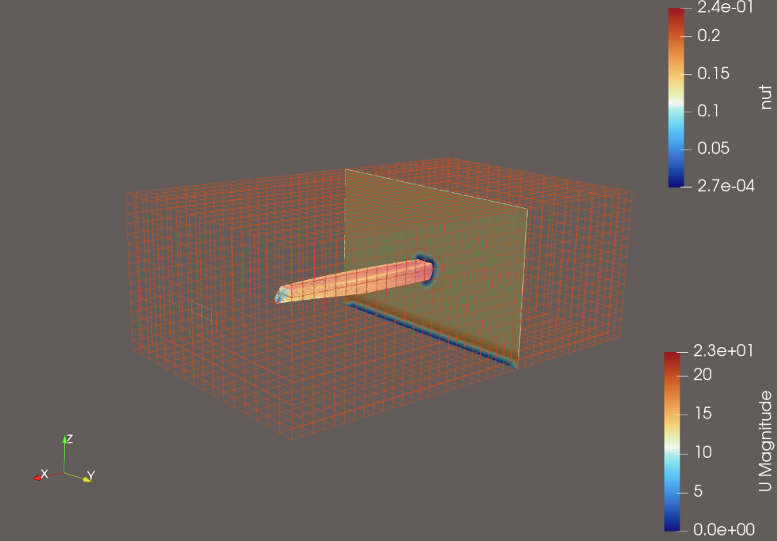

landing
home
things
thoughts
traces
talk
← things
Fluid Dynamics Physics Inspired Neural Networks and Automated OpenFoam Simulation Pipelines for a Spatial AI —
a Summer UROP Project with MIT DeCoDe.

See the
Github repo
for more details!